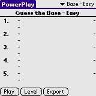
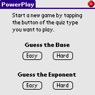
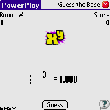
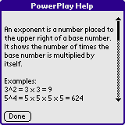
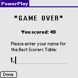
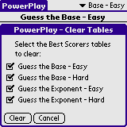
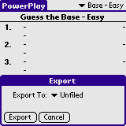

An exponent is a number placed to the upper right of a base number. It shows the number of times the base number is multiplied by itself.
Examples:
PowerPlay is a game where you guess missing bases or exponents in equations. You score fewer points the closer your guess is to the actual number that completes each equation.
After 10 rounds, you are given a final score. Lower scores are better. The top 5 scores are recorded on the Leader Board for each level of play.
There are two levels, easy and hard. In each level you can select to guess the base or the exponent.
Easy games use bases between 2-8 and 10. Easy games use exponents between 2 and 6.
Hard games use bases between 4-9, 11 and 12. Hard games uses exponents between 5 and 12.
Installation of PowerPlay is like installing any other Palm OS program:
When the synchronization is done you will have a 'PowerPlay' icon in the Unfiled category on your Palm PDA. Feel free to move PowerPlay to another category.
When starting PowerPlay you're met with the Best Scorers tables. Lower scores are better. Select the Best Scorers table using the drop down list in the upper right corner. Tap the Play button to start a new game of the same type as the game shown in the upper right corner. Tap the Level button to start a new game on another level. Tap the Export button to export the Best Scorers tables (all of them).
To start a new game tap the button corresponding to the game you want to play.
There are 10 bases or exponents to guess. Enter your guess in the field and tap Guess - your score will be determined and you go on to the next base or exponent. After 10 rounds, your performance will be evaluated ... Go for the lowest score! To end the game tap the red cross in the upper right corner. Each corner of the play field reveals a bit of information: current round, current score, level and a help button.
The help screen tells a bit about exponents and bases ... and what PowerPlay is all about.
After 10 rounds your overall performance is evaluated. If your score is low you will be asked to enter your name for the Best Scorers tables. Lower scores are best!
From time to time you want to clear the Best Scorers table. Select the Clear option from the Main menu. Select the tables to clear and then tap Clear. You will be asked to confirm your action. All tables are pre-selected.
Tap the Export button to export all the Best Scorers tables to MemoPad. You can select the category to receive the Best Scorers tables memo. The memo will list all tables, positions, dates, scores and names and can be transferred to the desktop for further processing.